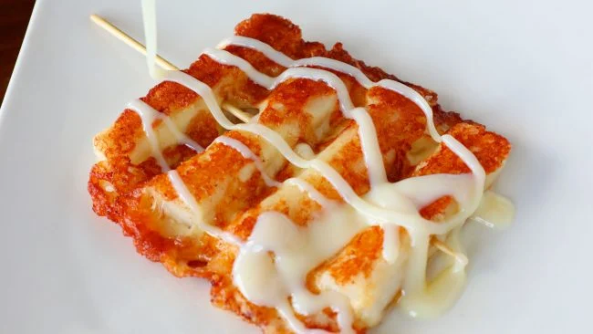

Grilled Cheese & Rice Cake Skewers (치즈떡꼬치)
(Cheese Tteok Kochi)
Skewered, soft and gooey cheese and a little crispy and chewy rice cake cooked on the grill with a little bit of butter.
Ingredient:
1. 6 pieces of 3 inch long string cheese
2. 8 pieces of 3 inch long cylinder shaped rice cakes
3. 2 wooden skewers
4. 1 tablespoon unsalted butter
5. Sweetened condensed milk, optional
Preparation Time:
20 minutes.
Cooking Instructions:
1. Soften the rice cakes
2. Separate the rice cakes and blanch them in boiling water for 1 or 2 minutes until they are soft. Put them in a bowl of cold water, drain and pat dry with paper towel
3. Make the skewers, Skewer rice cake and cheese alternatively, with 4 rice cakes and 3 cheeses. Make 2 skewers.
4. Heat a non-stick heavy skillet. Turn down the heat to medium low.
5. Add the butter and the skewers and let cook for 1 or 2 minutes until the bottom turns light brown.
6. Turn them over with a spatula and cook another 1 to 2 minutes until the cheese and the rice cake turn light brown.
7. Transfer the cooked skewers to a plate or put them into paper cups.
8. Drizzle condensed milk over top and serve right away.
<-- Click on the links at the side to view the recipes!